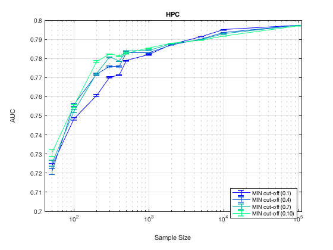
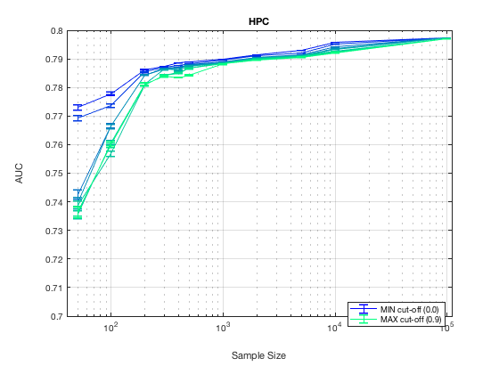

RedNet. Summary. HPC.
summary_stable_vars("RedNet", 1)
Figure 53. Model Generalizatbility. HPC
________________________________________

Figure 54. Feature Generalizability. HPC
_________________________________________

Table 71. Stability Cut Off Performance. Sample Size = 50. HPC.
________________________________________________________________
Stability Model_Generalizability Feature_Generalizability Number_Stable_Features Number_Non_Zero
_________ ______________________ ________________________ ______________________ _______________
'>= 0%' ' 0.724 +/- 0.001 ' ' 0.733 +/- 0.001 ' ' 3.4 +/- 0.0 ' 50
'>=10%' ' 0.730 +/- 0.001 ' ' 0.730 +/- 0.001 ' ' 3.4 +/- 0.0 ' 50
'>=20%' ' 0.728 +/- 0.001 ' ' 0.739 +/- 0.001 ' ' 2.3 +/- 0.0 ' 50
'>=30%' ' 0.721 +/- 0.002 ' ' 0.721 +/- 0.002 ' ' 1.5 +/- 0.0 ' 49
'>=40%' ' 0.722 +/- 0.002 ' ' 0.721 +/- 0.002 ' ' 1.5 +/- 0.0 ' 49
'>=50%' ' 0.726 +/- 0.002 ' ' 0.730 +/- 0.002 ' ' 1.3 +/- 0.0 ' 48
'>=60%' ' 0.725 +/- 0.002 ' ' 0.741 +/- 0.002 ' ' 1.2 +/- 0.0 ' 46
'>=70%' ' 0.730 +/- 0.002 ' ' 0.752 +/- 0.002 ' ' 1.2 +/- 0.0 ' 39
'>=80%' ' 0.730 +/- 0.002 ' ' 0.748 +/- 0.002 ' ' 1.1 +/- 0.0 ' 32
'>=90%' ' 0.731 +/- 0.002 ' ' 0.757 +/- 0.001 ' ' 1.1 +/- 0.0 ' 30
Table 72. Stability Cut Off Performance. Sample Size = 100. HPC.
_________________________________________________________________
Stability Model_Generalizability Feature_Generalizability Number_Stable_Features Number_Non_Zero
_________ ______________________ ________________________ ______________________ _______________
'>= 0%' ' 0.749 +/- 0.001 ' ' 0.772 +/- 0.000 ' ' 3.4 +/- 0.0 ' 50
'>=10%' ' 0.746 +/- 0.001 ' ' 0.771 +/- 0.000 ' ' 3.4 +/- 0.0 ' 50
'>=20%' ' 0.750 +/- 0.001 ' ' 0.769 +/- 0.001 ' ' 2.5 +/- 0.0 ' 50
'>=30%' ' 0.756 +/- 0.001 ' ' 0.764 +/- 0.001 ' ' 1.6 +/- 0.0 ' 50
'>=40%' ' 0.757 +/- 0.001 ' ' 0.764 +/- 0.001 ' ' 1.6 +/- 0.0 ' 50
'>=50%' ' 0.757 +/- 0.001 ' ' 0.764 +/- 0.001 ' ' 1.5 +/- 0.0 ' 50
'>=60%' ' 0.753 +/- 0.001 ' ' 0.766 +/- 0.001 ' ' 1.3 +/- 0.0 ' 48
'>=70%' ' 0.753 +/- 0.001 ' ' 0.766 +/- 0.001 ' ' 1.1 +/- 0.0 ' 48
'>=80%' ' 0.755 +/- 0.001 ' ' 0.767 +/- 0.001 ' ' 1.2 +/- 0.0 ' 44
'>=90%' ' 0.755 +/- 0.001 ' ' 0.776 +/- 0.000 ' ' 1.2 +/- 0.0 ' 40
Table 73. Stability Cut Off Performance. Sample Size = 200. HPC.
_________________________________________________________________
Stability Model_Generalizability Feature_Generalizability Number_Stable_Features Number_Non_Zero
_________ ______________________ ________________________ ______________________ _______________
'>= 0%' ' 0.761 +/- 0.000 ' ' 0.781 +/- 0.000 ' ' 3.2 +/- 0.0 ' 50
'>=10%' ' 0.761 +/- 0.000 ' ' 0.780 +/- 0.000 ' ' 3.2 +/- 0.0 ' 50
'>=20%' ' 0.767 +/- 0.000 ' ' 0.784 +/- 0.000 ' ' 2.3 +/- 0.0 ' 50
'>=30%' ' 0.772 +/- 0.000 ' ' 0.783 +/- 0.000 ' ' 1.7 +/- 0.0 ' 50
'>=40%' ' 0.773 +/- 0.000 ' ' 0.783 +/- 0.000 ' ' 1.7 +/- 0.0 ' 50
'>=50%' ' 0.776 +/- 0.000 ' ' 0.783 +/- 0.000 ' ' 1.5 +/- 0.0 ' 50
'>=60%' ' 0.772 +/- 0.001 ' ' 0.783 +/- 0.000 ' ' 1.4 +/- 0.0 ' 49
'>=70%' ' 0.776 +/- 0.000 ' ' 0.783 +/- 0.000 ' ' 1.2 +/- 0.0 ' 48
'>=80%' ' 0.777 +/- 0.000 ' ' 0.784 +/- 0.000 ' ' 1.2 +/- 0.0 ' 48
'>=90%' ' 0.778 +/- 0.000 ' ' 0.786 +/- 0.000 ' ' 1.1 +/- 0.0 ' 47
Table 74. Stability Cut Off Performance. Sample Size = 300. HPC.
_________________________________________________________________
Stability Model_Generalizability Feature_Generalizability Number_Stable_Features Number_Non_Zero
_________ ______________________ ________________________ ______________________ _______________
'>= 0%' ' 0.770 +/- 0.000 ' ' 0.783 +/- 0.000 ' ' 3.0 +/- 0.0 ' 50
'>=10%' ' 0.770 +/- 0.000 ' ' 0.784 +/- 0.000 ' ' 3.0 +/- 0.0 ' 50
'>=20%' ' 0.773 +/- 0.000 ' ' 0.785 +/- 0.000 ' ' 2.3 +/- 0.0 ' 50
'>=30%' ' 0.776 +/- 0.000 ' ' 0.784 +/- 0.000 ' ' 1.8 +/- 0.0 ' 50
'>=40%' ' 0.776 +/- 0.000 ' ' 0.784 +/- 0.000 ' ' 1.8 +/- 0.0 ' 50
'>=50%' ' 0.778 +/- 0.000 ' ' 0.784 +/- 0.000 ' ' 1.6 +/- 0.0 ' 50
'>=60%' ' 0.781 +/- 0.000 ' ' 0.784 +/- 0.000 ' ' 1.4 +/- 0.0 ' 50
'>=70%' ' 0.780 +/- 0.000 ' ' 0.784 +/- 0.000 ' ' 1.3 +/- 0.0 ' 50
'>=80%' ' 0.781 +/- 0.000 ' ' 0.784 +/- 0.000 ' ' 1.2 +/- 0.0 ' 50
'>=90%' ' 0.782 +/- 0.000 ' ' 0.780 +/- 0.001 ' ' 1.1 +/- 0.0 ' 49
Table 75. Stability Cut Off Performance. Sample Size = 400. HPC.
_________________________________________________________________
Stability Model_Generalizability Feature_Generalizability Number_Stable_Features Number_Non_Zero
_________ ______________________ ________________________ ______________________ _______________
'>= 0%' ' 0.771 +/- 0.000 ' ' 0.783 +/- 0.000 ' ' 4.4 +/- 0.0 ' 50
'>=10%' ' 0.770 +/- 0.000 ' ' 0.782 +/- 0.000 ' ' 4.4 +/- 0.0 ' 50
'>=20%' ' 0.774 +/- 0.000 ' ' 0.785 +/- 0.000 ' ' 3.2 +/- 0.0 ' 50
'>=30%' ' 0.776 +/- 0.000 ' ' 0.783 +/- 0.000 ' ' 2.3 +/- 0.0 ' 50
'>=40%' ' 0.776 +/- 0.000 ' ' 0.783 +/- 0.000 ' ' 2.3 +/- 0.0 ' 50
'>=50%' ' 0.778 +/- 0.000 ' ' 0.781 +/- 0.000 ' ' 2.0 +/- 0.0 ' 50
'>=60%' ' 0.779 +/- 0.000 ' ' 0.779 +/- 0.000 ' ' 1.8 +/- 0.0 ' 50
'>=70%' ' 0.778 +/- 0.000 ' ' 0.780 +/- 0.000 ' ' 1.6 +/- 0.0 ' 49
'>=80%' ' 0.781 +/- 0.000 ' ' 0.782 +/- 0.000 ' ' 1.3 +/- 0.0 ' 49
'>=90%' ' 0.781 +/- 0.000 ' ' 0.784 +/- 0.000 ' ' 1.2 +/- 0.0 ' 48
Table 76. Stability Cut Off Performance. Sample Size = 500. HPC.
_________________________________________________________________
Stability Model_Generalizability Feature_Generalizability Number_Stable_Features Number_Non_Zero
_________ ______________________ ________________________ ______________________ _______________
'>= 0%' ' 0.779 +/- 0.000 ' ' 0.784 +/- 0.000 ' ' 3.8 +/- 0.0 ' 50
'>=10%' ' 0.779 +/- 0.000 ' ' 0.785 +/- 0.000 ' ' 3.8 +/- 0.0 ' 50
'>=20%' ' 0.780 +/- 0.000 ' ' 0.785 +/- 0.000 ' ' 2.9 +/- 0.0 ' 50
'>=30%' ' 0.783 +/- 0.000 ' ' 0.785 +/- 0.000 ' ' 2.2 +/- 0.0 ' 50
'>=40%' ' 0.782 +/- 0.000 ' ' 0.784 +/- 0.000 ' ' 2.2 +/- 0.0 ' 50
'>=50%' ' 0.782 +/- 0.000 ' ' 0.784 +/- 0.000 ' ' 1.8 +/- 0.0 ' 50
'>=60%' ' 0.784 +/- 0.000 ' ' 0.782 +/- 0.000 ' ' 1.7 +/- 0.0 ' 50
'>=70%' ' 0.783 +/- 0.000 ' ' 0.782 +/- 0.000 ' ' 1.6 +/- 0.0 ' 50
'>=80%' ' 0.784 +/- 0.000 ' ' 0.782 +/- 0.000 ' ' 1.5 +/- 0.0 ' 50
'>=90%' ' 0.783 +/- 0.000 ' ' 0.782 +/- 0.000 ' ' 1.3 +/- 0.0 ' 50
Table 77. Stability Cut Off Performance. Sample Size = 1000. HPC.
__________________________________________________________________
Stability Model_Generalizability Feature_Generalizability Number_Stable_Features Number_Non_Zero
_________ ______________________ ________________________ ______________________ _______________
'>= 0%' ' 0.782 +/- 0.000 ' ' 0.789 +/- 0.000 ' ' 4.4 +/- 0.0 ' 50
'>=10%' ' 0.781 +/- 0.000 ' ' 0.788 +/- 0.000 ' ' 4.4 +/- 0.0 ' 50
'>=20%' ' 0.783 +/- 0.000 ' ' 0.791 +/- 0.000 ' ' 3.2 +/- 0.0 ' 50
'>=30%' ' 0.783 +/- 0.000 ' ' 0.788 +/- 0.000 ' ' 2.5 +/- 0.0 ' 50
'>=40%' ' 0.783 +/- 0.000 ' ' 0.788 +/- 0.000 ' ' 2.5 +/- 0.0 ' 50
'>=50%' ' 0.784 +/- 0.000 ' ' 0.788 +/- 0.000 ' ' 2.3 +/- 0.0 ' 50
'>=60%' ' 0.784 +/- 0.000 ' ' 0.786 +/- 0.000 ' ' 2.1 +/- 0.0 ' 50
'>=70%' ' 0.785 +/- 0.000 ' ' 0.784 +/- 0.000 ' ' 2.0 +/- 0.0 ' 50
'>=80%' ' 0.785 +/- 0.000 ' ' 0.783 +/- 0.000 ' ' 1.8 +/- 0.0 ' 50
'>=90%' ' 0.785 +/- 0.000 ' ' 0.784 +/- 0.000 ' ' 1.7 +/- 0.0 ' 50
Table 78. Stability Cut Off Performance. Sample Size = 2000. HPC.
__________________________________________________________________
Stability Model_Generalizability Feature_Generalizability Number_Stable_Features Number_Non_Zero
_________ ______________________ ________________________ ______________________ _______________
'>= 0%' ' 0.787 +/- 0.000 ' ' 0.792 +/- 0.000 ' ' 5.0 +/- 0.0 ' 50
'>=10%' ' 0.787 +/- 0.000 ' ' 0.792 +/- 0.000 ' ' 5.0 +/- 0.0 ' 50
'>=20%' ' 0.787 +/- 0.000 ' ' 0.794 +/- 0.000 ' ' 4.1 +/- 0.0 ' 50
'>=30%' ' 0.787 +/- 0.000 ' ' 0.793 +/- 0.000 ' ' 3.2 +/- 0.0 ' 50
'>=40%' ' 0.787 +/- 0.000 ' ' 0.793 +/- 0.000 ' ' 3.2 +/- 0.0 ' 50
'>=50%' ' 0.787 +/- 0.000 ' ' 0.792 +/- 0.000 ' ' 3.0 +/- 0.0 ' 50
'>=60%' ' 0.788 +/- 0.000 ' ' 0.791 +/- 0.000 ' ' 2.8 +/- 0.0 ' 50
'>=70%' ' 0.788 +/- 0.000 ' ' 0.789 +/- 0.000 ' ' 2.6 +/- 0.0 ' 50
'>=80%' ' 0.788 +/- 0.000 ' ' 0.788 +/- 0.000 ' ' 2.3 +/- 0.0 ' 50
'>=90%' ' 0.788 +/- 0.000 ' ' 0.783 +/- 0.000 ' ' 2.1 +/- 0.0 ' 50
Table 79. Stability Cut Off Performance. Sample Size = 5000. HPC.
__________________________________________________________________
Stability Model_Generalizability Feature_Generalizability Number_Stable_Features Number_Non_Zero
_________ ______________________ ________________________ ______________________ _______________
'>= 0%' ' 0.791 +/- 0.000 ' ' 0.794 +/- 0.000 ' ' 6.2 +/- 0.0 ' 50
'>=10%' ' 0.791 +/- 0.000 ' ' 0.794 +/- 0.000 ' ' 6.2 +/- 0.0 ' 50
'>=20%' ' 0.791 +/- 0.000 ' ' 0.795 +/- 0.000 ' ' 4.9 +/- 0.0 ' 50
'>=30%' ' 0.790 +/- 0.000 ' ' 0.796 +/- 0.000 ' ' 4.2 +/- 0.0 ' 50
'>=40%' ' 0.790 +/- 0.000 ' ' 0.796 +/- 0.000 ' ' 4.2 +/- 0.0 ' 50
'>=50%' ' 0.790 +/- 0.000 ' ' 0.796 +/- 0.000 ' ' 3.8 +/- 0.0 ' 50
'>=60%' ' 0.790 +/- 0.000 ' ' 0.796 +/- 0.000 ' ' 3.6 +/- 0.0 ' 50
'>=70%' ' 0.790 +/- 0.000 ' ' 0.795 +/- 0.000 ' ' 3.4 +/- 0.0 ' 50
'>=80%' ' 0.790 +/- 0.000 ' ' 0.795 +/- 0.000 ' ' 3.3 +/- 0.0 ' 50
'>=90%' ' 0.790 +/- 0.000 ' ' 0.793 +/- 0.000 ' ' 3.0 +/- 0.0 ' 50
Table 80. Stability Cut Off Performance. Sample Size = 10000. HPC.
___________________________________________________________________
Stability Model_Generalizability Feature_Generalizability Number_Stable_Features Number_Non_Zero
_________ ______________________ ________________________ ______________________ _______________
'>= 0%' ' 0.795 +/- 0.000 ' ' 0.796 +/- 0.000 ' ' 6.3 +/- 0.0 ' 50
'>=10%' ' 0.795 +/- 0.000 ' ' 0.796 +/- 0.000 ' ' 6.3 +/- 0.0 ' 50
'>=20%' ' 0.795 +/- 0.000 ' ' 0.796 +/- 0.000 ' ' 5.4 +/- 0.0 ' 50
'>=30%' ' 0.794 +/- 0.000 ' ' 0.797 +/- 0.000 ' ' 4.7 +/- 0.0 ' 50
'>=40%' ' 0.794 +/- 0.000 ' ' 0.797 +/- 0.000 ' ' 4.7 +/- 0.0 ' 50
'>=50%' ' 0.793 +/- 0.000 ' ' 0.797 +/- 0.000 ' ' 4.5 +/- 0.0 ' 50
'>=60%' ' 0.793 +/- 0.000 ' ' 0.797 +/- 0.000 ' ' 4.3 +/- 0.0 ' 50
'>=70%' ' 0.792 +/- 0.000 ' ' 0.797 +/- 0.000 ' ' 4.1 +/- 0.0 ' 50
'>=80%' ' 0.792 +/- 0.000 ' ' 0.797 +/- 0.000 ' ' 4.0 +/- 0.0 ' 50
'>=90%' ' 0.792 +/- 0.000 ' ' 0.797 +/- 0.000 ' ' 3.8 +/- 0.0 ' 50
Table 81. Stability Cut Off Performance. Sample Size = 100000. HPC.
____________________________________________________________________
Stability Model_Generalizability Feature_Generalizability Number_Stable_Features Number_Non_Zero
_________ ______________________ ________________________ ______________________ _______________
'>= 0%' ' 0.797 +/- 0.000 ' ' 0.797 +/- 0.000 ' ' 6.3 +/- 0.0 ' 50
'>=10%' ' 0.797 +/- 0.000 ' ' 0.797 +/- 0.000 ' ' 6.3 +/- 0.0 ' 50
'>=20%' ' 0.797 +/- 0.000 ' ' 0.797 +/- 0.000 ' ' 5.6 +/- 0.0 ' 50
'>=30%' ' 0.797 +/- 0.000 ' ' 0.797 +/- 0.000 ' ' 5.3 +/- 0.0 ' 50
'>=40%' ' 0.797 +/- 0.000 ' ' 0.797 +/- 0.000 ' ' 5.3 +/- 0.0 ' 50
'>=50%' ' 0.797 +/- 0.000 ' ' 0.797 +/- 0.000 ' ' 5.2 +/- 0.0 ' 50
'>=60%' ' 0.797 +/- 0.000 ' ' 0.797 +/- 0.000 ' ' 5.1 +/- 0.0 ' 50
'>=70%' ' 0.797 +/- 0.000 ' ' 0.797 +/- 0.000 ' ' 5.1 +/- 0.0 ' 50
'>=80%' ' 0.797 +/- 0.000 ' ' 0.797 +/- 0.000 ' ' 5.1 +/- 0.0 ' 50
'>=90%' ' 0.797 +/- 0.000 ' ' 0.797 +/- 0.000 ' ' 5.0 +/- 0.0 ' 50